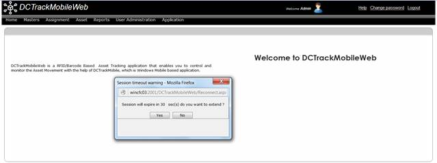

The DCTrackMobileWeb Web Application has a session timeout feature which prompts the user to renew the session if it has expired. The number of minutes before the session expired is controlled by a parameter called TimeoutInMinand is configured in the web.config file.

Figure 15: Session expiry warning
|
Copyright © 2019 Hewlett
Packard Enterprise,v5.2.
|